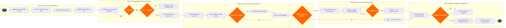

| Step | L4 Step Name | KPI / Target | Pain Point / Risk | Gate |
|---|---|---|---|---|
| 1.1 | Aggregate crew flight duty period records | Data completeness ≥99% within 24 hrs of duty completion | Missing ACARS sign-on/sign-off data during irregular ops causes duty time calculation gaps requiring manual correction in Jeppesen; sync delays post-disruption inflate analyst reconciliation workload by 30–40% | |
| 1.2 | Extract simulator training completion records | Training record update latency ≤4 hrs post-session; record accuracy ≥99.5% | Third-party simulator vendor API reliability varies — CAE Simfinity batch exports rather than real-time push require overnight reconciliation; discrepancies between carrier records and CAE records require manual adjudication with vendor | |
| 1.3 | Collect in-flight LOSA & IOE observation reports | ≥2 line observations per crew member per 12-month rolling window; observation form completion rate ≥95% | Check airman availability conflicts with revenue operations — scheduling a standards captain as observer removes a qualified crew member from a revenue flight; subjective scoring inconsistency across check airmen requires periodic inter-rater reliability calibration sessions (FAR Part 121.409) | |
| 1.4 | Aggregate customer satisfaction scores by crew assignment | Crew-attributed NPS ≥72; cabin crew complaint rate <0.3 per 1,000 PAX | Survey response rate <15% limits statistical significance at individual crew level — scores based on <5 responses are flagged as unreliable; Altéa crew-to-flight linkage requires manual reconciliation when irregular ops causes crew substitutions not captured in final manifest | |
| 2.1 | Validate recurrent training compliance deadlines | Zero crew members operating with lapsed recurrent training; ≥30-day advance alert issued for 100% of expiring qualifications | FAR Part 121.433 recurrent training windows are crew-type specific and vary by AQP approval — Jeppesen qualification rules must be manually updated when FAA approves AQP amendments; last-minute scheduling conflicts (crew illness, irregular ops) cause near-miss compliance breaches requiring emergency simulator slots | |
| 2.2 | Review proficiency check results and competency grades | First-attempt PC pass rate ≥94%; recheck completion within 30 days of initial failure | Inconsistent grading standards across check airmen require periodic inter-rater reliability audits — FAA ATOS inspectors have cited grading variance in Part 121 operator evaluations; simulator slot scarcity for MAX-type recurrent events (shared with new-entrant type rating candidates) causes recheck scheduling delays beyond the 30-day window | ⚠ |
| 2.3 | Verify medical certificate currency and fitness-for-duty status | 100% medical certificate currency verified before scheduling assignment; zero FAR Part 61.23 violations | FAA First Class medical certificate validity (12 months under age 40, 6 months over 40) requires proactive scheduling of AME appointments — AME scarcity in crew domicile cities (especially smaller hubs) causes crew members to approach expiry without confirmed exam slots; CASS medical flag propagation to Jeppesen rostering has 2–4 hr latency creating a window for illegal assignment | ⚠ |
| 2.4 | Assess type rating and route qualification currency | Qualification matrix accuracy ≥99.9%; zero illegal crew assignments attributable to qualification data error | Dual-system qualification storage (Altéa holds PSS-level eligibility; Jeppesen holds operational crew management records) creates synchronisation risk — a qualification update applied in one system but not the other can result in illegal assignment; no real-time bidirectional API between Altéa and Jeppesen requires manual reconciliation after each qualification event | |
| 3.1 | Compile integrated performance scorecard per crew member | Scorecard completion rate 100% within 30 days of quarter-end; data freshness ≤24 hrs from source systems | Five-source ETL pipeline (Jeppesen, CAE Simfinity, Medallia, FOQA, ASAP) requires ongoing maintenance — schema changes by any vendor break ingestion pipelines; AWS Redshift refresh latency spikes during post-irregular-ops recovery periods when data volumes are 3–5× normal | |
| 3.2 | Review FOQA exceedances and ASAP safety report history | FOQA exceedance rate <2.5 per 1,000 flight hours; ASAP report ERC review cycle ≤14 days | ASAP programme confidentiality provisions (FAA MOU requirement) restrict sharing of individual ASAP submissions with HR performance systems — safety managers must deconflict performance use of safety data from ASAP protections to avoid chilling voluntary disclosure; FOQA data volume from 800+ aircraft requires automated triage algorithm to prioritise analyst review | ⚠ |
| 3.3 | Conduct formal performance appraisal interview | Appraisal completion rate ≥98% within performance period; crew satisfaction with appraisal process ≥75% (internal survey) | SAP SuccessFactors has no native integration with Jeppesen Crew Management — crew performance data must be manually exported as CSV and uploaded to SuccessFactors before each appraisal cycle, creating data staleness risk; union CBA provisions (ALPA, AFA contracts) restrict appraisal content, frequency, and the use of ASAP/FOQA data in formal evaluations | ⚠ |
| 4.1 | Initiate Performance Improvement Plan with union review | PIP initiation within 10 business days of appraisal decision; ≥70% PIP completion success rate (crew returns to standard performance) | ALPA and AFA CBAs impose strict procedural requirements on PIP content and duration — legal review adds 5–10 business days before issuance; PIP templates must differ by crew category (captain, first officer, flight attendant) due to different contractual language, increasing HR preparation workload | |
| 4.2 | Schedule targeted remedial simulator or recurrent training | Remedial training scheduled within 21 days of PIP initiation; simulator slot utilisation ≥85% | Q4 recurrent training demand surge (driven by anniversary-month training windows clustering in autumn) competes directly with remedial training scheduling — PIP trainees are lower-priority than regulatory recurrent events, causing delays beyond the 21-day target; CAE Simfinity booking API rate limits cause queuing delays during bulk roster update events | |
| 4.3 | Monitor PIP milestone progress and conduct gate reviews | Gate reviews completed on schedule ≥95%; escalation decision issued within 5 business days of missed milestone | SAP SuccessFactors milestone alert configuration requires manual setup per PIP — no automated trigger from Jeppesen training completion events; inconsistent documentation standards across fleet types make cross-fleet PIP outcome comparisons unreliable for HR trend analysis | ⚠ |
| 5.1 | Generate FAA/AQP regulatory compliance report | Regulatory report submission on-time rate 100%; zero FAA violation notices attributable to reporting failures | FAR Part 121 Subpart Y (AQP) reporting requires carrier-specific competency unit data formats not natively exported by Jeppesen — manual report assembly from three source systems increases error risk during FAA ATOS audit periods; AWS S3 data lake partitioning strategy for crew records requires careful schema governance to support ad-hoc FAA data requests | ⚠ |
| 5.2 | Update crew qualification records in PSS and crew system | Record update latency ≤4 hrs post-qualification event; dual-system sync accuracy ≥99.99% | Dual-system update requirement (Altéa + Jeppesen) with no real-time sync creates a window during which Altéa reflects updated qualification but Jeppesen does not (or vice versa), enabling an illegal crew assignment if a scheduling query is run in the lagging system during the sync gap | |
| 5.3 | Archive performance records per regulatory retention policy | Record archival within 5 business days of period close; zero GDPR or FAR Part 121.683 retention violations | FAR Part 121.683 requires training records retention for the duration of employment plus 1 year, while GDPR (applicable to EU crew and EU-operated routes) mandates data minimisation and right-to-erasure — these requirements conflict for international crew records and require per-jurisdiction retention rules not supported by default AWS S3 lifecycle policies |